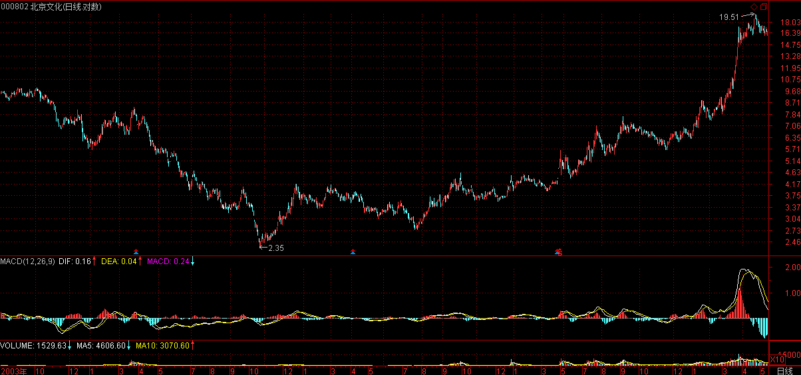

(2007-05-18 08:49:05)
本ID一直强调无须预测，并不是说市场走势就绝对不可预测，相反，市场走势当然可以绝对预测。
不过，这里的预测和一般所说的预测并不是同一意义，一般的预测是建立在一个机械的、上帝式思维基础上，这种思维，把市场当成一个绝对的、不受参与者观察所干扰的系统，由此而行为一套所谓的预测标准，一个建立在错误的思维基础上的标准。
这种预测，本来就不存在。关于这点，如果你对量子力学的历史发展有点了解，不难理解。
【韶山映山红】若禅精舍（陈秋明）：
量子力学诞生初期，全世界都还沉浸在牛顿式物理的思维方式里，认为“上帝不掷筛子”，所以对出现非可测波动的电子，之前的物理思维全部不适用，最后不得不引进概率来研究其波动性，这对“经典物理”的思维方式是颠覆性的，换句话说，当时的世界被“乱套了”，普遍认为世间万物可以用数学精确表达并预测（如可以通过计算得知未来的某年某月地球在轨道的某个点上）的想法，在量子物理领域“不存在”。
市场是有无数人，无数行为，在某个时间点产生的客观事实，这无数人的无数行为，本质上是不可测的，所以对点位、时间之类的预测系统，都建立在了一个虚无而不存在的假设上，这和传统的经济学理论如出一辙，即假设一个定论，然后从该假设的定论向上衍生推理各种结论，这就是属于“上帝式思维方式”。
原文的写作顺序，基本属于写到哪想到哪再写到哪。前一篇说从股票之小道入大道，这里就写了炒股就是真正的学佛，这是写前一篇文章时对文章里面想法的进一步延伸，经常写文章的人会很熟悉这种情况。
】
市场的预测、观察、参与者，恰好又是市场走势的构成者，这就是市场预测的最基本起点。因此，市场的走势模式，归根结底就是市场预测、观察、参与者行为模式的同构，这意味着，唯一并绝对可以预测的，就是市场走势的基本形态。
不学无术之辈，喜欢谈论所谓的点位，却不知道，点位只是基本形态演化的一个结果，是当下中形成了，形态是“不患”的，点位是“不患”之“患”，只要把握了这“不患”，其“患”自然就在当下的把握中。那种追求对点位的非当下把握，绝对是脑子进水，因为点位都是当下形成中的，这是一个“不患”，企图逃离这个“不患”而谋其“患”，不是脑子进水是什么？正因为点位都是在基本形态的演变中当下形成的“不患”，才有点位的“不患”之“患”。
【韶山映山红】若禅精舍（陈秋明）：
“市场的预测、观察、参与者，恰好又是市场走势的构成者”，能够理解这句话的人应该不多。简单的讲，当一个预测者恰好又是走势的构成者，那么因为该预测而导致的实际执行，其行为会影响被预测的结果本身。例如在一个简单的系统里面，可能只有两三个人参与的市场，其中一个人预测价格到八块就要下跌了，那么他可能在七块九的时候就执行了卖出的行为，最终的结果就是价格不到八块就实现了下跌。在人数足够多、影响因素足够多的情况下，预测者自身根据预测的结果而执行的操作，这些无数的行为只能产生不可测的结果。
而形态的可测，说的其实就是“走势必完美”的必然性，这是不患的，而当下形态的形成，正是在此“不患”的基础上而当下“患”之。
“患”与“不患”的相关论述见《论语》系列，或见“若禅精舍”订阅号文章：缠中说禅的“患”与“不患”。
】
明白了这个道理，才算是有了市场预测的“正眼”，无此“正眼”，都是瞎掰。
而实际操作中，最基础的，就是对基本形态的最基本把握，这是“不患”的，只有立足于这“不患”上，才有对点位之“患”当下的把握。说白了，所有的操作练习，归根结底就是在此之上。所以，本ID说自己只是一个训练者，引导者，因为当下，只能是你的当下，离开你的操作当下，根本是不存在的。
由此，不难理解另外一个操作上的“不患”，就是你事先确立的操作级别，这是“不患”的。
市场，归根结底只是你的市场，就像，一个看花只能看到花的眼睛，那自然看花就是花，不会把花看成猴子，科学的把戏，就是要先假设所有的被科学定义为眼睛的物体，都只能把花看成花，所以科学在股市上注定死无葬身之地。
【韶山映山红】程老湿爱吐槽 2019年3月30日 23:00
对于交易入门来说，最忌讳的就是参与品种过多、范围过大。如果你能在一个品种上稳定赚钱，就没必要参与更多品种。对吧？
这也是问题症结所在。
市场是一个多变量系统，换句话说，决定市场涨跌的力量来自很多层面，你不可能完整评估每个力量的构成和规律，甚至想精确分配权重都不可能。
那么，相对容易一点的方式就是缩小关注范围将视线聚焦在局部或者特点目标上，这样可以最大限度排除掉不相关的干扰，让影响参数的数量变少，更容易分析。
越宏大，变量越多，越难以精确；但趋势一旦形成也最不容易改变，因为惯性大。
这里面就涉及到了操作层面上的“取舍” —— 衡量利弊后的选择。
也许你经过了十几年的交易，能够对我上面这些话有体会。那么，我就再说一点你可能想不到的“点”： 其实最简单的交易品种就是你的“净值”。
“通过认知市场去试图掌控标的”与“通过认知自我去试图掌控净值”，并没有本质上的区别。
很多人花费很多年很多年的时间在前面这一部分，然而，局限性是显而易见的前提，你终究不可能了解你并不能完全了解的事物，如同万能的上帝不可能创造自己举不起来的石头。
后一部分就相对容易一些。最大的风险来源于你下单的手，隔绝账户与市场的相关性只是摁下一个键的事。所以，根本不需要什么牛股，哪怕最简单最傻瓜的套利交易也能让你的净值变成牛股。
重要的是，你究竟有多了解自己？你做决策的变量是什么？如果净值下行你该怎么应对，如果净值上行你该怎么处理，如果遭遇低迷，你如何能够迅速摆脱心理干扰？
研究股票也好，研究公司也罢，都是在研究你不能完全控制的客观事物。为什么不多研究下自己？ 哪怕最简单最平凡的交易活动，也能通过减少无谓错误而产生足够利润。
当然，我只是提出一个“假设”，一个思路 —— 如果连最起码的要经历的过程都没有走完，思考这些，也是“无用”的。】
【韶山映山红】若禅精舍（陈秋明）：
“科学”是一个强求大众去共同接受的世界投影。经常有人说这样不科学，那样不科学，类似的靶子有中医、风水、八卦、转基因、舍利子、藏地的虹化、道家的法术、打坐的神通等等。而这些客观存在的东西，如果认定是不“科学”的，就必须有一个关于“科学”的前提条件，那就是人类目前所掌握的“科学”，覆盖了客观世界的全部。这是没有可能的事情，事实上我们人类对客观世界的认知，当今任何一个科学家都不敢不负责任的说已经无可探索，并也不能保证我们已经认知的就是绝对正确。
在天圆地方是科学的以后，麦哲伦出现了；当地心说被称为科学之后，哥白尼出现了；当经典物理称为全球共识的科学之后，量子力学出现了。欧洲的教廷、中国的钦天监，都曾在历史上客观过“科学”的代言人。“科学”，无非是一个权威的说法，这个词的核心在于权威，而不是正确。
而所有的股票理论，最终都要靠人去落实，去实践，少了人这个因素，一切都失去意义。这些论述在缠师的论语系列中有很多，并且是其中心思想之一。就好像在马克思看来，哲学是用来改变世界的，无法对现实造成实际影响的“玄谈哲学”都是无聊勾当。
】
所有的市场，都必然只能是你当下观察、操作中的市场，离开你当下的观察、操作，市场对于你来说并不存在，或者说毫无意义。而你的观察、操作，必须有一个“不患”的前提，就是你的操作级别。这操作级别，就等于一个把花看成花或把花看成猴子的眼睛，在你的世界里，把花看成花与把花看成猴子所包含的基本模式是同构的，关键是这个模式，而不是花还是猴子的不同设定。
所以，本ID的理论里，可以适用于任何操作级别的人，因为不同级别之间的基本模式是同构的，这就是市场的一个基本特征。
注意，这特征不是理所当然的，这个特征之所以存在，归根结底，就是市场参与者有着基本相同的结构，这结构，归根结底，就是贪嗔痴疑慢。
甚至可以这样说，在六道轮回中，任何的类市场形态，本ID的理论都适用其中，因为，这贪嗔痴疑慢是同构的。所以，如果本ID这理论的种子种下后，就算你轮回到其它道上，那里恰好有一个股票市场，你也可以在其中如鱼得水。
【韶山映山红】若禅精舍（陈秋明）：
贪嗔痴是不患的，所有参与市场的人于此同构，所以同级别走势的力度能够在走势的当下得以彰显。而所谓“零向量”就是不参与市场的预测，以当下的实际呈现来决定进出，不把自己参与到因为预测而对走势的干扰上。
】
那么，市场的基本形态是什么，最基础的，就是反复说的以中枢、级别为基础的趋势与盘整。
而背驰的级别一定不小于转折的级别，是市场预测的最基础手段。
【韶山映山红】神燕提出这里有错误：背驰的级别一定不小于转折的级别？背驰的级别不是应该等于或小于转折的级别吗？★】
【韶山映山红】这个问题实际上是看问题的立足点的问题。
站在背驰的角度看，按照29课的分类，背驰之后的转折是本级别以上级别的反趋势、更大级别以上级别的盘整。也就是说，任何背驰之后的转折都一定不小于背驰的级别。这样看，缠师说反了。
站在转折的角度看，转折只有两种情况：本级别背驰的本级别转折，小级别背驰引发的本级别转折。很显然，背驰的级别一定不大于转折的级别。这样看，缠师说反了。
但是，缠师这里偏偏是站在“市场预测”的角度看，说的重点是“市场预测的最基础手段”。不能断章取义地只拿半句话来找茬。走势类型只有两种：趋势和盘整。趋势背驰保证有次级别三段的反弹，盘整背驰保证次级别返回，这就是各种背驰情况所能做的预测。所以，背驰的级别一定不小于转折的级别。至于29课三种情况的划分，其实都是趋势背驰之后三段反弹的继续演化的结果，在背驰的当下，是不可预测的。这才是这句话的正确解读。所以这里没有笔误。】
例如，你是一个30分钟级别的操作者，那么，任何30分钟级别下跌及30分钟级别以上的盘整，你都没必要参与。【韶山映山红】从这句话里发现一个陷阱：“一个30分钟级别的操作者”到底操作什么？除了“30分钟级别下跌”、“30分钟级别以上的盘整”之外，还有哪些走势？或者说，“一个30分钟级别的操作者”只操作30分钟上涨趋势吗？如果说是，那么，我们有能力预先知道下一个走势将是一个上涨趋势，而不是盘整？所以说这里是陷阱。★“一个30分钟级别的操作者”到底操作什么？只操作三买后的一段，直到发生盘整背驰。三买后发生盘整背驰，就意味着可能有“30分钟级别以上的盘整”，不参与，所以要退出。而三卖等情况预示可能会有“30分钟级别下跌”，不参与，所以要退出。具体情况都在49课。】
因此，当一个30分钟的顶背驰出现后，你当然就要绝对退出，为什么？因为这个退出是在一个绝对的预测基础上的，就是后面必然是一个30分钟级别下跌或扩展成30分钟级别以上的盘整，这就是最有用、最绝对的预测，这才是真正的预测，这是被本ID的理论绝对保证的，或者说这是被市场参与者的贪嗔痴疑慢所绝对保证的。【韶山映山红】不论是“最有用、最绝对的预测”，还是“真正的预测”，只要是预测，就没有上帝之手。“当一个30分钟的顶背驰出现后”，“绝对的预测基础上”的预测是“一个30分钟级别下跌或扩展成30分钟级别以上的盘整”。”这是丰满的理想，骨感的现实是“当一个30分钟的顶背驰出现后”，只保证有三段下跌，而且第三段还不一定比第一段更低。这是做空打短差的时候要注意的补仓问题，以免丢失筹码。做多也有同样的问题，参见107课。】
【韶山映山红】老枪的贴图。】
本ID的理论，归根结底，就是研究这贪嗔痴疑慢的。
由此也就知道，为什么市场的操作，归根结底就是人自身的比较，为什么本ID可以把理论大肆公开而不会影响本ID自己的操作，因为，只要这世界依然有这贪嗔痴疑慢，本ID就如鱼得水。
有人整天痴谈学佛，其实，炒股票就是真正的学佛，不在这贪嗔痴疑慢的大烦恼中如鱼得水、得大自在，你那佛，顶屁用！
【韶山映山红】若禅精舍（陈秋明）：
技术好学，贪嗔痴难除，其实对任何股票理论，到最后拼的就是对贪嗔痴的控制程度，况且仅仅是技术就已经可以筛除掉一大半人了，当然可以毫不保留的公开。通过股票而认识到必须着手对自身进行升级的人越多，就离这理论的根本作用与目的就越近一步，而金砖都拿不起来的，自然也没有那个基础去一睹宝山。
有趣的是，非常多的人，对缠论的技术盲目自信，因信而信却不知道其中的逻辑必然性，于此同时又对缠师关于佛、大道、打坐、论语之类的论述不当回事，对“论语是源泉”、“炒股就是学佛”之类的观点无动于衷，人之颠倒可见一斑。这种选择性的“信仰”，本质上是由“我执”引起的，以自我认知为中心对事物价值的评判。
】
附录：
【韶山映山红】2007-5-18 15:38】
今天，只有脑子都是水的人，才会觉得上海要新高。用脚指头思维都知道，周末消息面的压力会让走势在这里犹疑。今天的平衡市走势，无非就是对此的一种正常反应。
技术上，管了指数已经N天的4040点依然站不住，当然，这只是为了对中枢不了解的人给出的点，如果熟悉正常分析，可以找到更精确的点。
下周初，大盘的这种震荡一定要选择方向了，一个最简单的原因，就是5日线对10线之吻已经春情荡漾了。这种方向的选择，最终将导致震荡区间的加大，技术点说，就是形成一个更大级别的震荡。
深圳最近之所以比上海强，只是因为对应上海1/2线的深圳成指数的1/2线在13700点，还有较大空间的。所以，后面走势无非两种选择，深圳把上海带起来或相反，这种两个市场的背离走势，是不可能再延续的。
大盘每天的走势都是本ID理论的最好注释，像上海今天的05.18 13:26，当时当下如何判别，用什么方法可以精确地把握。
如果你还搞不清楚，那么就证明你需要复读。答案很简单，一个中枢震荡的两段间的力度判别，05.17 14:30-05.18 10:00与05.18 10:58-05.18 13:26，用1分钟的MACD来辅助，然后考察后一段的细部，用类似区间套的方法就可以精确定位。
注意，这一切都可以当下完成的，无须事后解释。如果上述方法你一无所知或根本搞不清楚，那放假两天继续补课。
本ID最近比较无聊，放假是有点不可能了，今晚、明后两天都排满了。为了高兴一下，八卦一个消息，就是5月10日写文章那老熟人，结婚了，这消息今天应该公布了，网络上应该都有，由此就知道此人文章的分量。【韶山映山红】5月10日写的文章就是华生的《市场过热的信号》(2007-05-10）】
最后再八卦一下，本ID国安永远争第一的股票，究竟在今年涨幅排第几了？前面还有多少先进需要超越，让本ID也有个努力的目标。【韶山映山红】今年涨幅排第几了？2007-05-18排第四。】
【韶山映山红】000416健特生物，生产脑白金。2008-01-06变更为华馨实业，2008-12-30变更为民生投资，2014-04-14变更为民生控股。】
收盘时，再把今天的评论附上，先下，再见。
2007-5-18 08:50
今天，只有脑子都是水的人，才会觉得上海要新高。用脚指头思维都知道，周末消息面的压力会让走势在这里犹疑。今天的平衡市走势，无非就是对此的一种正常反应。技术上，管了指数已经N天的4040点依然站不住，当然，这只是为了对中枢不了解的人给出的点，如果熟悉正常分析，可以找到更精确的点。
下周初，大盘的这种震荡一定要选择方向了，一个最简单的原因，就是5日线对10线之吻已经春情荡漾了。这种方向的选择，最终将导致震荡区间的加大，技术点说，就是形成一个更大级别的震荡。
深圳最近之所以比上海强，只是因为对应上海1/2线的深圳成指数的1/2线在13700点，还有较大空间的。所以，后面走势无非两种选择，深圳把上海带起来或相反，这种两个市场的背离走势，是不可能再延续的。
大盘每天的走势都是本ID理论的最好注释，像上海今天的05181326，当时当下如何判别，用什么方法可以精确地把握。如果你还搞不清楚，那么就证明你需要复读。答案很简单，一个中枢震荡的两段间的力度判别，05.17 14:30-05.18 10:00与05.18 10:58-05.18 13:26，用1分钟的MACD来辅助，然后考察后一段的细部，用类似区间套的方法就可以精确定位。注意，这一切都可以当下完成的，无须事后解释。如果上述方法你一无所知或根本搞不清楚，那放假两天继续补课。
本ID最近比较无聊，放假是有点不可能了，今晚、明后两天都排满了。为了高兴一下，八卦一个消息，就是5月10日写文章那老熟人，结婚了，这消息今天应该公布了，网络上应该都有，由此就知道此人文章的分量。最后再八卦一下，本ID国安永远争第一的股票，究竟在今年涨幅排第几了？前面还有多少先进需要超越，让本ID也有个努力的目标。
2007-5-18 15:38
今天，只有脑子都是水的人，才会觉得上海要新高。用脚指头思维都知道，周末消息面的压力会让走势在这里犹疑。今天的平衡市走势，无非就是对此的一种正常反应。技术上，管了指数已经N天的4040点依然站不住，当然，这只是为了对中枢不了解的人给出的点，如果熟悉正常分析，可以找到更精确的点。
下周初，大盘的这种震荡一定要选择方向了，一个最简单的原因，就是5日线对10线之吻已经春情荡漾了。这种方向的选择，最终将导致震荡区间的加大，技术点说，就是形成一个更大级别的震荡。
深圳最近之所以比上海强，只是因为对应上海1/2线的深圳成指数的1/2线在13700点，还有较大空间的。所以，后面走势无非两种选择，深圳把上海带起来或相反，这种两个市场的背离走势，是不可能再延续的。
大盘每天的走势都是本ID理论的最好注释，像上海今天的05181326，当时当下如何判别，用什么方法可以精确地把握。如果你还搞不清楚，那么就证明你需要复读。答案很简单，一个中枢震荡的两段间的力度判别，05.17 14:30-05.18 10:00与05.18 10:58-05.18 13:26，用1分钟的MACD来辅助，然后考察后一段的细部，用类似区间套的方法就可以精确定位。注意，这一切都可以当下完成的，无须事后解释。如果上述方法你一无所知或根本搞不清楚，那放假两天继续补课。
本ID最近比较无聊，放假是有点不可能了，今晚、明后两天都排满了。为了高兴一下，八卦一个消息，就是5月10日写文章那老熟人，结婚了，这消息今天应该公布了，网络上应该都有，由此就知道此人文章的分量。最后再八卦一下，本ID国安永远争第一的股票，究竟在今年涨幅排第几了？前面还有多少先进需要超越，让本ID也有个努力的目标。
2007-5-18 15:39
[匿名] 糊涂虫 2007-05-18 15:25:30
缠老师，问一个很弱智的问题，一定要回答，不然会吃不下饭，睡不着觉的
问题是：在一个３０分种的Ｋ线图上出现一个出现一个时间跨度为３天或者８天的中枢（２４＼６４根Ｋ线）和一个时间跨度为１天或者３个小时中枢（８／６根Ｋ线），请问这两个中枢的＂级别＂是一样的？在某一级别的Ｋ线图上，其中枢的级别是否由中枢形成的时间决定的？
谢谢老师和师兄＼师姐们
==
中枢是用递归方法定义的，先要把这个理解清楚，否则你说的中枢和本ID说的都不是一样东西，怎么可能理解？
2007-5-18 15:41
[匿名] 冠军杯 2007-05-18 15:32:48
缠MM 你好，我提过N次问题都没回答哦，今天想问下000800，000063的情况怎么样？063 被套了，谢谢
==
这两股票中线都问题不大，被套肯定是因为在震荡区间中追高买了，可以好好学学震荡区间操作的要领。
【韶山映山红】000800一汽轿车。】
【韶山映山红】000063中兴通讯。】
2007-5-18 15:45
两只老虎 2007-05-18 15:14:59
今天操作也很郁闷！扔了999 1/4，想回补结果错过机会。补了一天的998，结果998萎靡了一天
-----------
[匿名] 墨香小老虎 2007-05-18 15:35:32
我今天老老实实的,反倒收益新高.唉.郁闷.还是技术不行啊.
==
应该把做错的原因找出来，每一个都不能放过，这样才能磨练出精确度。否则，看均线就可以了，那还简单。
2007-5-18 15:47
匿名] 启程 2007-05-18 15:46:28
楼主。我想问个问题。000911由于3月中的停牌。造成4月初复牌后的两个涨停牌。月线图上就留了一个大缺口。现在股价一直在震荡。难道这样的缺口一定要补吗？望批示！谢谢罗～～
【韶山映山红】000911南宁糖业。】
==
谁说缺口一定要补的？像突破性的缺口，就不补。像上海，94年在300多点还留着一个呢。
2007-5-18 15:48
[匿名] 新浪网友 2007-05-18 15:22:15
老大,教你打坐2什么时候开讲,很感兴趣
==
下周，还有论语等，都要恢复正常，最近忙，照顾不周，请原谅。
2007-5-18 15:49
[匿名] nothing 2007-05-18 15:49:14
老大,老孔的有篇文章里提到过你的名字嗳
==
名字只是个符号，本来就是让人口活的，如果这都有反应，那定力还需要加强。
2007-5-18 15:52
匿名] christine 2007-05-18 15:52:13
姐姐，在实际看盘时，有时会发现当时即可以看成是某级别买点又可以看成是某级别卖点的情况发生，不同级别出现的不同的买卖点这种情况该怎么处理?
==
首先这种情况是不可能发生的。【韶山映山红】买点和卖点永远不可能重合。】
当然，有可能发生的是，大级别的卖买点和小级别的买卖点很接近，这当然要看大级别的来操作，除非你有足够的经验与精确度确认，小级别的操作有可以退出的空间。【韶山映山红】大级别的买卖点有区间套的小级别买卖点。可见这个“很接近”的小级别买卖点，是小级别转折造成的。大级别是否转折，要做小转大的分析。否则，就要等大级别转折后的买卖点。除非小级别的走势很有力度，确保“小级别的操作有可以退出的空间。”。】
2007-5-18 15:54
[匿名] 新浪网友 2007-05-18 15:54:23
另，妹妹：由你的课程：
大牛市的序幕，还未真正拉开。 2007-05-10 15:56:10
相应速率的测算上，是否也可以应用到个股上？
谢谢。
==
可以，但比例关系不一定一样。本ID有时间可以分析个股来看，当然，只能是有足够时间的交易时间的老股了。【韶山映山红】可以做个专题。以后研究。★★★】
2007-5-18 15:57
[匿名] 夜雨 2007-05-18 15:56:54
美女姐姐，我这两天老是卖最强势的股，减仓600597，昨天卖点卖出600203，买的都还在盘整，象600203我昨天卖了，今天这么位，怎么才能把握啊，还有600203今年的涨幅也跟416差不多，这两支，有的比，有什么可以八卦一下吗？
【韶山映山红】600597光明乳业。】
【韶山映山红】600203福日股份。2007-04-18变更为福日电子。】
==
不熟练的，可以把级别放大点，别1分钟都没背驰就急于操作，甚至可以规定自己，那种5日线都不跌破的调整，可以不管的。
另外，卖了是为了买回来，特别对那些大级别在强劲上升的股票，否则，卖了不买，那为什么要卖？【韶山映山红】小级别的卖，是做空打短差。】
至于203，和416比不上吧，一个300%多，一个500%多了。
【韶山映山红】000416健特生物，生产脑白金。2008-01-06变更为华馨实业，2008-12-30变更为民生投资，2014-04-14变更为民生控股。】
2007-5-18 16:01
[匿名] nothing 2007-05-18 15:49:14
老大,老孔的有篇文章里提到过你的名字嗳
==
缠中说禅 2007-05-18 15:52:41
名字只是个符号，本来就是让人口活的，如果这都有反应，那定力还需要加强。
--------
[匿名] YY 2007-05-18 15:59:21
老大，知道口活是啥意思吗，不能乱说啊
==
当然知道，电视上、电台里，天天干的就是这样事情。
2007-5-18 16:02
匿名] 钢铁大道 2007-05-18 15:58:35
女王好，汇报近日操作，由于揣摩您意思失误，昨日进入中信国安（000839）。原本看该股高级别图形不错，仅1f和5fK线欠佳，不料进入后被套，加上一旦今日加息出台，周一是否要拼命出逃规避调整风险？盼复。
==
明显的思维矛盾，
既然你是看好大级别的，就要按大级别的图形来思维，而不用管小级别的事情。
如果你只能忍受小级别的波动，就按小级别操作，不能大小级别搞乱了。
2007-5-18 16:04
果二 2007-05-18 15:51:15
今天对大盘倒是判断正确了，可是个股操作不理想。盘中打短差都只打到2毛，只够交手续费了。而且边看大盘边看个股，有的股又不跟大盘走，都看晕了！
==
本ID不是早说了，大盘震荡，有些个股会大幅上涨，例如416、607这些，如果你按大盘来看，那肯定是要出问题的。
个股就按个股走势看，如果个股要跟着大盘，那自然就表现出与大盘一致的买卖点结构。从这，不难判断大盘与个股的相关程度。
2007-5-18 16:07
[匿名] 漂泊 2007-05-18 16:06:16
禅主好，根据您的理论进了600166，涨停了，但是600601越来越看不懂了，请您给看看，谢谢
==
短线就是围绕11.8的一个中枢震荡，没什么难看的。
【韶山映山红】600601方正科技。11.8是小中枢的ZG。】
2007-5-18 16:10
[匿名] 大盘 2007-05-18 16:09:08
请问博主：在1分钟图表上有时1分钟中枢三段加延伸段超过6段（但是小于9段）的情况，在5分钟图表中也通常可以看出下上下和上下上的三段，但是按照定义这应该仍然是1分钟级别。如果没有每日下载1分钟数据，那么5分钟图表中看出的下上下三段有没有什么办法可以确定其具体级别？要知道，每日下载1分钟数据很占空间也不方便【韶山映山红】缠师又答非所问了。提问者的意思是说，1分钟图上6段波动的走势，在5分钟图上也是同样的6段波动，如果不看1分钟图的时候，如何知道这6段波动走势的级别？★】
==
5分钟上的走势要完成的，其精确判断一定需要1分钟图，否则并不是5分钟的一定有5分钟背驰，如果小级别转大级别就没法看了。
如果只有5分钟图，那只能把操作级别放大，把5分钟当最小级别的。
2007-5-18 16:12
[匿名] 戈石 2007-05-18 16:11:39
尊女王：估计最近某些家伙的尾巴被您给踩疼了，天天到这来狂吠。歇斯底里的，估计快气绝身亡了。
==
物种多样性，是要保持的，否则就不环保了。
2007-5-18 16:13
[匿名] joyce 2007-05-18 16:09:40
美女老师：刚刚开始看还觉得看出点眉目沾沾自喜，到“中枢”就卡壳了，55555555，您文章中举的例子时间早了，看不见，怎么办啊？
==
如果你学理科的，应该不难搞懂中枢的递归定义。如果你学文科或者艺术的，需要直观才能明白定义的，这里有网友把中枢定义画了图，你可以问他们的网址去看。本ID有一帖子上有那地址，本ID现在也不知道是哪个帖子了，如果可能去找一下也可以。
2007-5-18 16:16
对不起，本ID要去西边一街道去了，大老远的，今天又是周末，必须走。晚上还有两拨事情。
周日继续音乐会，先下，再见。
2007-5-18 16:19
[匿名] 阿Q 2007-05-18 16:13:44
很久没有看到楼主的论语了。
最近看了点王阳明的书，楼主能对王阳明给个评价吗？
==
下周就有，【韶山映山红】下周就有论语。】
王连皮毛都得不到，只是瞎搞而已。【韶山映山红】缠师何以如此评价王阳明？★以后研究。】
【韶山映山红】缠师对王阳明的评价，要看参照物是谁。比照孔子，当然低。】
【韶山映山红】按照缠师的解读，孔子更像科学辩证唯物主义，当然比王阳明的唯心主义高级。】
【韶山映山红】王阳明出入佛道几十年后，还是皈依了儒家，也十分注意与禅宗划清界限。所以缠师才瞧不上？出世，入世，还是不一样。】
无善无恶心之体，有善有恶意之动；知善知恶是良知，为善去恶是格物。
神秀“时时勤拂拭，莫使惹尘埃”和慧能“本来无一物，何处惹尘埃”
2007-5-18 16:22
谭无稽
【一】
如今阳明心学很热，但凡对传统文化有点兴趣的都愿上去凑一凑，以为知道个知行合一、致良知就了不得了。实际上，修学阳明心学是有着四个层次的，越往深层去，越是人迹罕至。
第一个层次，是那些拿王阳明炖鸡汤、把心学当成功学指南的人，这些人是大多数，却其实连心学的门都没摸到。第二个层次，是那些老老实实按照阳明教诲去学习理解的人，看着正统却终归是学者，只是摸到了门把手而已。第三个层次，是知道阳明心学是一门修行学、肯老老实实下工夫用功的人，这些人才算入了门，才称得上是阳明门徒，简直凤毛麟角。但就算如此，仍远远不达第四个层次。
在这个最深的层次里，是王阳明深埋心底不肯说也不敢说的东西，他自己亲口说，这是不该泄露的天机。一直到最后不得不说出来，也完全是如履薄冰的迫不得已。
【二】
熟悉王阳明的人都知道，他是一个极有涵养的人，对于别人的请教哪怕是问难，也总是勤勤恳恳地回答，从来不生气。只有一次例外，这次他真的动气了。
阳明曾说他静坐时的省察克治之法是：“省察克治之功则无时而可间，如去盗贼，须有个扫除廓清之意。无事时，将好货好色好名等私，逐一追究搜寻出来，定要拔去病根，永不复起，方始为快。常如猫之捕鼠，一眼看着，一耳听着，才有一念萌动，即与克去，斩钉截铁，不可姑容，与他方便，不可窝藏，不可放他出路，方能扫除廊清。”有一个朋友问他，这样做恐怕是“剜肉做疮”吧？肉是好肉，疮是坏肉，分别代指天理和人欲。剜肉做疮，就是把本来一体的东西硬分作两个，难道不是庸人自扰、矫揉造作吗？
阳明听了立马正色道：这是我医人的方子，真能去人的病根。就算那些大本事的人，过了十多年也依然用得到。你要不用就放起来，不要作坏我的方法！过了一会他又说：这样思量不关你的事，肯定是我门人中那些稍微知道了真意的人，对你这样说来误你。《传习录》载，听到阳明这样说，“在坐者悚然”。
在座的人为什么悚然惊惧呢？因为阳明等于是承认了他朋友所说的是对的，因为他明白说这“必吾门稍知意思者”所说，是那些开始真正咂摸出真意的人所说。天理和人欲无论对于理学还是心学都是根本课题，理学讲“存天理、灭人欲”，王阳明讲“致良知”，其实说的是一回事，都是克去人欲而回复天理，只不过一个是从物理下手一个是从心理下手。而这里王阳明却开始承认天理人欲是一回事，这就是在座者悚然的原因。
这还只是开始。
【三】
众所周知，阳明心学的宗旨所在和最高概括，是著名的“四句教”：无善无恶心之体，有善有恶意之动；知善知恶是良知，为善去恶是格物。王阳明说“我年来立教，亦更几番，今始立此四句”、“以后再不可更此四句宗旨”，又说“已后与学者言，务要依我四句宗旨”、“以此自修，直跻圣位；以此接人，更无差失”，可见这是他高度认可的东西。
四句教以“无善无恶”为最高的心体，在阳明门人中引起了很大的困惑、掀起了很大的波澜，心学后来的分化瓦解这里也是源头。门人们一方面觉得这是师尊所说，千真万确，确实也高深莫测；另一方面又觉得这跟禅有什么区别，这还是善恶明辨的儒吗？其中虽然也说知善知恶、为善去恶，这跟无善无恶的心体间的关系又是什么，这不是在说知善知恶和为善去恶还不是最究竟和高明处吗？总之，这跟本于良知、高扬致良知的阳明心学，乃至整个儒家的精神，看上去差异太大了。
这些困惑，自四句教提出就已开始了。比如阳明高徒王龙溪和钱德洪，就曾对这个问题展开争论。王龙溪认为，如果说心体是无善无恶的，那么意也是无善无恶的，知也是无善无恶的，物也是无善无恶的，如果心体之外这些是有善有恶的，那么心体就不可能是无善无恶的。钱德洪则以为，心体原本是无善无恶的，但人都被业习污染了，才在心体上看到有善恶在，而为善去恶就是回复那本体的工夫，如果只说本体如此而不落工夫，就只是一无用处的见地而已。
两人争执不下，就来请王阳明裁决，阳明在天泉桥上见了他们，这就是著名的“天泉证道”。听了他们的叙述，王阳明很高兴，说“正要二君有此一问！”可见这正是涉及根本和核心的疑问所在。王阳明的裁决，是“二君之见正好相取，不可相病。汝中（王龙溪）须用德洪工夫，德洪须透汝中本体”，这是承认了两人所说都是对的，只不过一个是说工夫，一个是说本体，也就是说王龙溪所说一切无善无恶，确确实实就是真相。
但他同时提醒，钱德洪尽管这样用功，就是合本体的工夫，但王龙溪能见得此意，只能默默自修，不能用来接引别人。因为这是只适合上根之人的法子，可以“一悟本体，即见工夫，物我内外，一齐尽透”，这样的人太少，哪怕颜回、程明道这样的大才恐怕都不敢承当，又岂可轻易示人。王阳明之所以那样重视四句教，则就是因为上根人和下根人都能够接引到，能够使其各随禀赋、各取其法。
再联想到“剜肉做疮”，我们就能明白王阳明为什么会动气，因为戳中了他深藏的心事，而他并没打算要说出来。四句教也并没有自相矛盾，而是心学实在有一层隐藏至深的密义在。这密义不是王阳明不肯说，而是不敢轻易说，怕误人。一切都是无善无恶的，这才是阳明心学的究竟实相；省察克治、致良知等，则都不过是方便法门而已。
所以在天泉桥上，王阳明说：“汝中所见，我久欲发，恐人信不及，徒增躐等之弊，故含蓄到今，此是傅心秘藏，颜子问道所不敢言。今既说破，亦是天机该发泄时，岂容复秘！”“躐等”就是逾越等级、不讲次序，可能导致混乱。不久，有门人三百多人来请益，阳明又说：“吾有向上一机，久未敢发，以待诸君之自悟，近被王汝中拈出，亦是天机该发泄时。”说这些话后的第二年，王阳明就过世了，这真是他在晚年临终之前才被迫说出的真相。从他的语气也不难听出，即使说出了，他心中仍是惶恐不安的。
而这正是文章开始所说，阳明心学最深的那一层。
【四】
王龙溪和钱德洪的争论，简直就是神秀“时时勤拂拭，莫使惹尘埃”和慧能“本来无一物，何处惹尘埃”的翻版。二人的主张，指向的也实是顿悟和渐修的问题。王阳明的面目，也越来越像六祖慧能了。
所以那个根本性的问题也更加清晰地矗立在我们面前：阳明心学和禅到底有什么不同？阳明出入佛道几十年后皈依的是儒家，也十分注意与禅宗划清界限，那么两家的无善无恶又到底区别在哪里？
阳明心学的这层至深密义，又究竟意味着什么？
【五】
事情还是要从“无善无恶”本身说起。这一触及大本大源的东西，究竟是什么意思？
不知道大家有没有想过，人是为天地所包容在内的，人的一切都是受天道支配的，所以人是要法则天地的，这是常识。而人之所谓善恶是非，在天地间都包含着，从未消失，那么如果真的有应该有不应该，天地又为何如此安排？所以必定是人的认知本身出了问题。
让我们剥去其中人的感情色彩，回归善恶是非所指的那些事物本身，就会发现，所谓的善恶是非实际指的是“完全”还是“不完全”。什么意思呢？就像我们每个人都不同，虽然都很渺小，却都是这个世界的组成部分，世界所以大；每个人都是依自己不同的想法活着，或许都很片面，也都是天道的组成部分，天道所以全。世间既有高处深处，也有低处浅处，没有低处浅处作为整体空间中的基础构成就不可能形成高处深处；精神也是如此，一切高明的思想都是来自对琐碎的整合和对低级的提升。
因此广大高深只是更完全而已，窄小低浅只是不够完全而已。前者就是人们所谓真善美，却是因对后者的包容而成；后者就是人们所谓假恶丑，却是作为前者的元素存在。所以根本就没有什么是不应该存在的，所谓善恶是非是相辅相成的。从最完全的层面来说，善不过是恶的全体，是不过是非的全体。
这是从空间层面来说，从时间层面看也是如此——正是因为不完全，所以才有变化，才会发展，才有后来的越来越完全。时空合之就是天地宇宙，天地宇宙只是如如自然，这便是天地的真相，与人狭隘的善恶是非、好恶拒迎的差别所在。本为一体、混沌不分，这就是有为层面的无善无恶。
阳明又说“良知本体原来无有，本体只是太虚”，《楞严经》也说“当知虚空，生汝心内，犹如片云，点太清里，况诸世界，在虚空耶”，一切都是像天体存在于虚空宇宙，一切都是自虚无而来、从虚无而终。从这太虚来看，所谓善恶是非都是局限幻相罢了，这便是一切存在毋论善恶是非的本性，便是无为层面的无善无恶。
那么既然如此，是不是善恶是非就无所谓了？是不可就可以为所欲为了？王阳明流入狂禅一路的后学弟子便是以为如此，他们像梁启超说的“满街皆是圣人，酒色财气不碍菩萨路，猖幻至此”，拳打师父、当着人脱光衣服、满地打滚、大白天带着娼妓男女同浴……也怪不得王阳明在道破天机时会惶恐不安了。究其根本，这是不解阳明真义——无善无恶的内核和经脉，明明是虽然大是由小构成的、全是由缺发展而来的，但向着大和全却是天道运行的总趋势。人的私心正是源于小与缺，那么果能向着大和全而去，又怎会自甘堕落、胡作非为？阳明所以一再强调工夫的重要性，即使是到了无善无恶的层面，心学一贯的精神也是丝毫未失的。
这些，就是无善无恶的全部内涵，世间几千年在这上面的争论，多么荒谬。有了这个底子，才能谈心学与禅的区别，以及心学至深密义的真正意味所在。
无善无恶是人的心体，也是天地万物的本体。在这点上心学与禅其实是完全一致的，却同时有着根本的不同——一致，是在内涵上；不同，则在旨趣上。须知人虽然抵达的是这同一个本体，之后分化出的方向却有完全不同的两条：一个是脱身于外而出局，立于本体的太虚处，对世间万物万事皆随缘应化；一个是投身于内而入局，从本体的运行趋势出发而推动万事万物向着大和全而去。前者正是禅宗、整个佛家乃至道家的旨趣所在，后者则正是阳明心学、整个儒家乃至诸子百家其他各家的旨趣所在。这，正是它们的究竟不同。
要怎么理解儒家的这种旨趣呢？答案就在五经之首的《周易》。所谓无善无恶，在万象上指向的是两点：存在即合理，以及生发不息，凝聚为一字就是既有在义也有变义的“生”。而周易怎么说呢？“生生之谓易”、“天地之大德曰生”，这才是超越善恶是非之上的眼界。大道之行本有两途，一曰万法归虚，一曰创生万物，儒走的就是后者，释道走的便是前者。两点合之，才是圆满，所以儒家才有后来理学心学的在本体上的发展，佛家才有从小乘到大乘菩萨行的演化，都是从自身旨趣出发而趋向圆满的努力。
儒家终究是入世的，终究是要经世致用、利益世间的。那么既然世间诸事无善无恶，只要目标是向着道而去，手段自然也无所谓光明卑劣，只看在面临的事情上如何适应。我曾看到一句形容张居正的话：“用最不齿的手段，实现最神圣的理想。”说的好极了。而我以为，这就是对阳明心学至深密义悟得通透之后，再应用于世间所应秉持的方向和路径，这正是这密义所真正意味的东西。因为目标崇高，手段哪怕再卑劣，也只是当时情境下的不得已；即使可能受因果的反噬，这却正是儒家的担当所在。这看上去惊世骇俗，却正考验你的智慧和担当，能否像王阳明那样。这点，恐怕是阳明心学的密中之密。
可惜世间人，要么落在前者，要么落在后者，要么以正人君子自居而耻用手段，要么只知阴谋诡计而丢了光明本体，这两种人历史上比比皆是，能够通达的却少之又少，都是未通大道。所谓道术，道虚无一物而成无我无私，术应于万象而无所不可，这才是终极的高明。
从这个方面说，阳明心学堪称最高级的厚黑学。所谓厚黑，即是脸厚心黑，要做到极致，非真无我大无畏而不能为之。《厚黑学》作者、自称“厚黑教主”的民国妙人李宗吾所以说，厚黑学和阳明心学的意义是等同的。此中真意，几人识哉！
但需要特别注意：这个路子，真不是一般人能驾驭得了的，不仅更需要上上根器去契合，也更需要具备足够的悟境和工夫。不是这样的人，就当开阔眼界解放思想即可，还是要遵循老祖宗的教诲，老老实实做人、踏踏实实做事，才稳当靠谱。
发布于 2017-11-14
对不起，本ID要去西边一街道去了，大老远的，今天又是周末，必须走。晚上还有两拨事情。
周日继续音乐会，先下，再见。
2007-5-18 16:23
(2007-05-20 14:01:01)
英雄是什么玩意？历史不断把这种玩意不断去玩意。但无论英雄是什么玩意，在这个时代，连这种玩意都不可寻觅了。
没有英雄，留下的，有关于英雄的音乐，在今天播放的，就是这样两部作品：贝多芬的第五钢琴协奏曲以及他的第三《英雄》交响乐。
战胜世界的英雄，并不一定能战胜自己；不能战胜自己的，最终也必将失去世界。
英雄是什么，并不重要。对于一般人来说，不要成为牺牲品，去让某些人得以用全人类的血来染他们的英雄梦，这比任何定义都更要重要。
所谓的英雄忽悠什么牌子并不重要，什么自由、民主，都不过是些漫天挥舞的避孕套、电动玩具。而那些所谓的英雄，最终成为独裁者，成为用所有人的命运去满足自己想象的垃圾时，唯一重要的是，一定要知道，这些人不过是泥脚巨人，是你们，是所有的每一个把他们举起的，是自作自受，活该！
【韶山映山红】《圣经旧约全书·但以理书》记载，巴比伦国王尼布加尼撒梦见一个巨大雕像，头是金的，胸和肾是银的，腹和腰是铜的，腿是铁的，但脚是半铁半泥的。突然飞来一块大石头，砸在巨像脚上，泥足粉碎，庞大身躯轰然倒地，摔成碎片，打碎巨像的石头随之变成一座大山。沙皇俄国黄金时期的叶卡捷琳娜时代，西欧人用出自《圣经》的“泥足巨人”来讽喻沙皇俄国；列宁论述帝国主义时称之为“泥足巨人”，鼓舞无产阶级联合起来打倒资产阶级、帝国主义的统治；中国人更熟悉毛主席的用词：纸老虎。】
各位周末好，还有事要处理，不能多说了，先下，再见。
2007-5-20 14:02
(2007-05-21 08:43:51)
加息如期而至，央行那几板斧无须预测，谁看谁知道。
几乎所有人，都正迷失在加息等央行板斧是否适当、有效的争论中。但无论央行这程咬金三板斧是否适当、有效，都掩盖不了这样的事实：目前的金融结构体系必须彻底改革。
在目前国内的金融结构下，在西方被广泛采用的利率工具究竟有多大意义，就很值得怀疑；而大量发行的票据与存款准备金的提高，究竟能对所谓的流动性过剩有多大作用，同样值得怀疑。
但一个最直接的效果却是无可怀疑的，就是，这些西式教科书指导下的所谓调控已经并继续使得央行的资产负债表变得越来越难看，而历史上很多的困难，往往是因为把自己当上帝进行盲目调控而造成的。
当然，央行不会被ST，但即使是央行，显然也不能因为绝对不会被ST就可以不顾效果地继续挥舞那程咬金的几板斧。政策资源也是有限的，三板斧挥多了，轻则不灵，重则自残，这不可不防。
理论上，这种教科书式的调控是以线性连续为基础的，也就是说，是先假设通过相应金融结构的作用后，其输出、其效果也是线性连续的。
而中国目前的金融结构存在结构性奇点，这种结构性奇点的存在，就在于中国金融结构是由差异性极大的成分所组成，换言之，那种使得西式货币政策能充分发挥效果的金融结构还未被有效地建立起来。
这就像如果你要应用欧氏几何来解决问题，那你首先要确认考察的对象是满足第五公设的，否则就是无的放失。而要让货币手段能发挥其作用，一个最基本的前提，就是要建立一个符合让该货币手段发挥作用的金融结构体系，显然，这是比忙于摆弄加息、准备金、人民币波幅限制等更为根本、更为迫切的事情。
即使该体系前提已经成立，那么目前这种加息等程咬金游戏又能延续多久？人民币与美圆之间的基本息差要求使得加息空间是有边界的，而美圆一旦加息周期结束，这其中的压力与风险，难道不需要警觉？
人民币现在的问题，归根结底是美国需要通过美圆贬值来把其前期积累的经济风险转嫁到世界其他经济体所造成的，如果不站在货币战争的视角上谈论人民币问题，永远都只能是隔靴搔痒。而目前中国这种外汇储备的总体结构决定了，这问题不从根本上解决，将是一个极大的命门。
如果说现在通过大量减持美圆在外汇储备中的超配比重已经有点不切实际，那么用稀释的方法尽快把该比重调节下来，才是迫在眉睫的事情。
至于把货币政策调整的目标与资本价格直接挂钩，大概是这星球中最无意义的事情了。
其实，如果真想要把股市搞下来，一个最简单并唯一有效的方法就是把经济搞下去，其他一切方法，从本质上都是无效的。
一切因素，在市场中都只能是市场的因数之一，市场是所有方面的合力结果，这些合力都是在同一个整体的经济基础上，除非直接破坏这个基础，才会使得市场的分力有了一个相同的维度变化，否则都会在差异性中延续其自然的过程。
一个历史的事实是可以重温的：在最近不断被提及的1996年所谓的“十二道金牌”后，深圳成分指数5个月后，从2792点一直上攻到6102点，在其1/2线的技术压力下才无政策打压地自然见顶。
可以断言，如果不像股权分置改革之于股市那样从根子上对金融体系结构进行彻底改革，现在所面临的金融结构难题是不可能通过诸如加息之类头痛涂脚气药的方法解决的。
加息，中国经济不能承受之轻。一个具有结构性奇点的经济体系，如果不进行彻底的金融结构体系，胡乱按照西方教科书来给经济下药，不仅使得抗药性积聚增加，最终导致相应政策完全失效，而且不排除最终将引发政策自导式危机，用通俗的话说，就是本来只是感冒，最终吃药给吃出癌症来了，发生这样的事情，并不是天方夜谈。
西方的调控手段，类似西医，当然有其有效性，但也有其弊端，如果学而不通，依书照搬，其危害就更大了。
经济体系，如同人体，不妨也多从中医的角度看问题。对于经济调控者来说，有三句中医的话是必须知道的：“凡药三分毒”、“上工治未病”、“学不博无以通其变，思不精无以烛其微，师于古而不泥于古”。当然，最后一句，更应该改成“师于西而不泥于西”。
附录：
【韶山映山红】2007-5-21 15:42】
今天的走势，在技术上十分规范，早上先冲到最近反复强调的4040上，然后回调，并在第四根30分钟K线突破向上，并在下午确认4050上下单边区间的有效性。
明天的走势就很简单了，如果这单边区间不被跌破，大盘将继续向上拓展区间，否则就再次陷入原中枢的延伸震荡中。
本ID反复强调，关于1/2线大震荡的三种具体形式在形成、选择中，这是市场各种力量合力的结果，不管是管理层还是所谓的经济雪茄，以及市场参与者，并没有一方有绝对的力量，因此才构成最终具体的形式。对此必须有最清醒的认识，而最理想的方式，就是在充分的震荡中，不断让市场统一在本ID所指出的方向上来。管理层恐高，也应该给他们以适应的时间，因此还是本ID5月份后常说的那句话，反左反右，对空头与多头里的极端分子采取强硬措施，更要在市场中让他们左右挨巴掌。当然，震荡的区间可以加大，并不是说一定要限制在目前的区间中。但用震荡消化市场、政策压力的本ID剧本，必须成为市场的共识，否则就让市场对极端分子进行强行教育。
在这种震荡中，充分利用本ID的理论来操作，是一个最好的选择。当然，如果你技术不过关，那就看5周均线，甚至10周均线，从去年8月以来，后者就从未被跌破过，看这足够在各种大震荡中心理减震了。对于短线，看不明白用不好本ID理论的，可以看5日均线，这两天关键看这5日与10日之吻能否再次女上位。
个股方面没什么可说的，还是那句话，大盘震荡，有些股票反而会大幅上涨，前面说的这句话依然有效。
具体板块，本ID去年底说的医药，今年最牛的几只股票里，002019、000416等，显然都是这个板块的；还有钢铁，最近可以关注有关中小公司整体上市的，具体的本ID知道，但不好说出来，免得被监管，其中有一地方本ID好象曾419过。至于军工、公用等等，都会继续表现的，你看本ID16只股票里相应的都知道了。
还有就是上月反复强调的故意亏损的那些，例如本ID就知道某故意亏损还星号ST、代码还是等比数列的其实后面就有两个铜矿装进去，这种把戏，如果有可能就去挖掘。
【韶山映山红】等比数列，指的是600139绵阳高新，2007-04-11变更为*ST绵高，2009-06-04变更为西部资源。】

算了，本ID不希望这里被监管，所以绝对不说具体股票了。而且大家也不能养成听消息的习惯，最终解决问题的，还是要技术过关。
大盘评论，收盘附录本文后给出。
先下，3点半见。
2007-5-21 08:45
今天的走势，在技术上十分规范，早上先冲到最近反复强调的4040上，然后回调，并在第四根30分钟K线突破向上，并在下午确认4050上下单边区间的有效性。明天的走势就很简单了，如果这单边区间不被跌破，大盘将继续向上拓展区间，否则就再次陷入原中枢的延伸震荡中。
本ID反复强调，关于1/2线大震荡的三种具体形式在形成、选择中，这是市场各种力量合力的结果，不管是管理层还是所谓的经济雪茄，以及市场参与者，并没有一方有绝对的力量，因此才构成最终具体的形式。对此必须有最清醒的认识，而最理想的方式，就是在充分的震荡中，不断让市场统一在本ID所指出的方向上来。管理层恐高，也应该给他们以适应的时间，因此还是本ID5月份后常说的那句话，反左反右，对空头与多头里的极端分子采取强硬措施，更要在市场中让他们左右挨巴掌。当然，震荡的区间可以加大，并不是说一定要限制在目前的区间中。但用震荡消化市场、政策压力的本ID剧本，必须成为市场的共识，否则就让市场对极端分子进行强行教育。
在这种震荡中，充分利用本ID的理论来操作，是一个最好的选择。当然，如果你技术不过关，那就看5周均线，甚至10周均线，从去年8月以来，后者就从未被跌破过，看这足够在各种大震荡中心理减震了。对于短线，看不明白用不好本ID理论的，可以看5日均线，这两天关键看这5日与10日之吻能否再次女上位。个股方面没什么可说的，还是那句话，大盘震荡，有些股票反而会大幅上涨，前面说的这句话依然有效。具体板块，本ID去年底说的医药，今年最牛的几只股票里，002019、000416等，显然都是这个板块的；还有钢铁，最近可以关注有关中小公司整体上市的，具体的本ID知道，但不好说出来，免得被监管，其中有一地方本ID好象曾419过。至于军工、公用等等，都会继续表现的，你看本ID16只股票里相应的都知道了。还有就是上月反复强调的故意亏损的那些，例如本ID就知道某故意亏损还星号ST、代码还是等比数列的其实后面就有两个铜矿装进去，这种把戏，如果有可能就去挖掘。
算了，本ID不希望这里被监管，所以绝对不说具体股票了。而且大家也不能养成听消息的习惯，最终解决问题的，还是要技术过关。
2007-5-21 15:42
[匿名] 飞 2007-05-21 15:27:00
请问博主，某下跌或上涨的走势类型中，某级别围绕两个中枢振荡的次级别走势发生重叠而形成中枢扩张。请问：1.这个扩张的中枢是否发生重叠后就完成了？2.这个扩张后的中枢如果完成或没完成那他的次级别走势的三段该如何算起？如何区分？
==
你这样说不够严谨。
中枢扩展不能预先说是某级别的，因为扩展可以不断延续下去。
这个问题其实很简单，如果你明白连接的可结合性，就更简单了，其实就是A+B+C=（A+B+C），而后者符合更大的中枢定义，所以就可以说A扩展了，并没有什么高深的地方。【韶山映山红】前提是两个中枢的振荡区间重叠，是否完成的判断依据是：1，能分解、组合出三个中枢，表示为A+B+C。2，组合的更大级别的新中枢要符合中枢定义，表示为（A+B+C）。】
2007-5-21 15:50
[匿名] 半路学禅 2007-05-21 15:45:50
有一个问题想问一下禅主：因为技术不是很过关，所以鸡蛋放在3、4个篮子里，每天开盘后不停的轮换分析，操作多些时，还编个Excel表格算差价，这样下来，每天精神耗费大，而且还不是每次都能买卖正确且打到差价上。想想禅主每天至少十几支股票的操作，而且还是大资金，都能应付自如，做到游刃有余，真是佩服！！！想问一下，禅主的操作法诀是什么？
==
这个问题很简单，本ID只需要告诉指令，具体敲键盘这种活本ID是不干的。所以本ID反复说，资金小的一定要集中，一般散户，2、3只就足够了。
2007-5-21 16:02
[匿名] 新浪网友 2007-05-21 15:59:46
博主.能不能说说早盘的反弹.在1F钟图上不是很好把握啊
==
你要看5分钟图，就知道震荡的力度比不上上次，当然，由于速度太快，如果准备不足，或交易通道太慢，基本是买不到精确位置的。
不过后来很多时间可以去选择，例如，1040分的第二类买点，在1分钟MACD上是典型的冲破0轴后第一次回抽0轴。
关键是要理论上真明白，至于一些具体的操作，因为通道或行情太快等原因完成不了，则不必太在意，只要真懂了，还怕没机会？
2007-5-21 16:08
[匿名] 首钢股份 2007-05-21 16:07:17
女王！好久没来了，我在单位上博客太慢，但您的思路，群里的同学们已经传达给我了！我问问，您说的钢铁板块，是即将整体上市的，还是已经整体上市的？？这关系到我选择承德钒钛还是华陵管线！您一定回复阿！跪求！
==
最好看走势，钢铁股里有整体上市的很多，如果你对基本面了解比较清楚的，自己可以去选择。本ID说的不是这两只，不过这两只也不错，总之钢铁板块问题都不大。
2007-5-21 16:11
[匿名] 哈哈 2007-05-21 15:54:40
继续问。急啊。 缠主教教我们怎么选择不ED的吧，很不幸碰到000807这个“瘟神”已经瘟了快2个星期了，振幅也不大做短差也够呛看30分钟线简直就是条直线我已经快被它搞的吐血了资金利用率全耗在他上面了！99偶吧！！！ 请问之后应该怎么操作呀。
【韶山映山红】000807云铝股份】
==
你为什么一定要大涨后才买？大涨后调整很自然。
2007-5-21 16:22
匿名] 缠途漫漫 2007-05-21 15:45:45
博主好！有问题请教：
20课原文：“而中枢的形成无非两种，一种是回升形成的，一种是回调形成的。对于第一种有a1=b1,b2=c2；对第二种有a2=b2,b1=c1。但无论是哪种情况，中枢的公式都可以简化为[max（a2,c2），min（a1,c1）]。”
上面原文似乎隐含着一个前提：即构成本级中枢的每段次级别走势，其起点和终点就是该次级走势的最高点或最低点，否则谈不上a1=b1,b2=c2或a2=b2,b1=c1。
那么一段完成的走势类型，其起点和终点一定是该走势类型的最高点或最低点吗？【韶山映山红】次级别走势都看作是没有内部结构的线段，所以无所谓起止点是否最低最高点，做区间分析的时候修正一下就行。】
还有，原文：对5分钟的同级别分解，以最典型的a+A为例子，一般情况下，a并不一定就是5分钟级别的走势类型，但通过结合运算，总能使得a+A中,a是一个5分钟的走势类型，而A，也分解为m段5分钟走势类型，则A=A1+A2+..+Am。
这里同级分解的若干段，相邻两段的连接点，是否就是这相邻两段共同的高点或低点呢？
==
通过结合律，都可以把归到你说的这种标准形式上，也就是连接点都是高、低点。【韶山映山红】先做起止点判断，然后依据结合律做最低最高点的标准化处理。问题是，如果结合不出来呢？★就把更低级别的走势并入某一段次级别走势。比如a+A中，a是1分钟走势，A是30分钟中枢，a就可以并入5分钟的A1。以后研究。】
2007-5-21 16:27
[匿名] 酒吧心情 2007-05-21 16:10:04
谁那么SB!!!!!!有毛病啊!!贴我们的聊天记录!!!!请JJ帮我们删了!都是梦话!!!!
==
已经删了，你看是否删干净了。
2007-5-21 16:28
[匿名] 新浪网友 2007-05-21 15:59:08
此人的留言请尽快帮我们删掉，这里出来汉奸了。
[匿名] 横刀 2007-05-21 16:16:04
不删的话，一大帮群里的同学将严重受伤。谢谢姐姐啦
==
已经删掉。
2007-5-21 16:33
[匿名] 短路 2007-05-21 16:31:38
同学们还是花多花点心思研究课程，提高技术吧。不要总想走捷径。
电路中 捷径－－短路
股市中 捷径－－......
==
很对，关键是学好技术，其他，都可以不关注，包括本ID八卦说的股票。
2007-5-21 16:36
[匿名] 缠途漫漫 2007-05-21 15:45:45
博主好！有问题请教：
20课原文：“而中枢的形成无非两种，一种是回升形成的，一种是回调形成的。对于第一种有a1=b1,b2=c2；对第二种有a2=b2,b1=c1。但无论是哪种情况，中枢的公式都可以简化为[max（a2,c2），min（a1,c1）]。”
上面原文似乎隐含着一个前提：即构成本级中枢的每段次级别走势，其起点和终点就是该次级走势的最高点或最低点，否则谈不上a1=b1,b2=c2或a2=b2,b1=c1。
那么一段完成的走势类型，其起点和终点一定是该走势类型的最高点或最低点吗？
还有，原文：对5分钟的同级别分解，以最典型的a+A为例子，一般情况下，a并不一定就是5分钟级别的走势类型，但通过结合运算，总能使得a+A中,a是一个5分钟的走势类型，而A，也分解为m段5分钟走势类型，则A=A1+A2+..+Am。
这里同级分解的若干段，相邻两段的连接点，是否就是这相邻两段共同的高点或低点呢？
==
缠中说禅 2007-05-21 16:27:11
通过结合律，都可以把归到你说的这种标准形式上，也就是连接点都是高、低点。
------
[匿名] 缠途漫漫 2007-05-21 16:33:48
谢谢博主。但对于9段5f走势振荡扩张从30f中枢扩张到日线中枢的情况，似乎不符合上面所说。例如这九段走势的振荡呈三角形收敛状态，则每3段构成的30f走势，起最高点或最低点，显然不一定是两段30f走势间的连接点。
==
延伸的只看前三段的区间，后面都是震荡。【韶山映山红】站在5分钟的角度，中枢区间就是“前三段的区间”，后面都是震荡。站在30分钟的角度，就是5分钟走势做三三三划分，然后根据30分钟的三三三的区间来确定高级别中枢的区间。】
你用5分钟的角度和用30分钟的角度去分解图形，得出不同的中枢结果很正常，但原则是一样的。【韶山映山红】5分钟的角度，我们能够看到5分钟中枢的起止点和最高最低点不一致的内部情况。用30分钟的角度的时候，把5分钟中枢视为没有内部结构的一段。实用的方法就是：用起止点画连接线，用高低点画区间。】
2007-5-21 16:41
对不起，本ID有事要先下了，晚上如果有时间，回来早就上来，但不一定有，看情况吧。
下，再见。
2007-5-21 16:43
(2007-05-22 08:48:56)
孟武伯问孝。子曰：“父母唯其疾之忧。”
杨伯峻：孟武伯向孔子请教孝道。孔子道：“做爹娘的只是为孝子的疾病发愁。”
钱穆：孟武伯向：“怎样是孝道？”先生说：“让你的父母只忧虑你的疾病。”
李泽厚：孟武伯问如何是孝？孔子说：“使父母亲只担心子女的疾病。”
详解：
上三解中，杨的解释变成答非所问，显然大错特错；钱、李的解释大同小异，但都把孝变成了一种行为规范而脱离了实际情感的当下基础。
孟武伯，上章孟懿子的儿子。“父母唯其疾之忧”是“唯其疾之忧父母者”的倒装与省略，“唯”，纵使；“其”，指代儿女；“之”，结构助词。
孔子这里说的很平易，也很有操作性。什么是孝？孔子给出一个判别的标准，就是“儿女纵使生病也担忧父母的那种感情”，为什么？因为自己生病而使得父母担心，更使得父母得不到照顾，为此不安，因此产生忧愁。这种感情是当下产生、发自内心的，不需要什么道德规范去约束。
本章，如上章，同是站在具体个体的角度，审视“孝”作为一个具体的个体行为的当下性。孝，不是一种虚无飘渺的道德概念，而是一种真切的当下的感情，纵使你生病，也当下产生担忧父母的感情，这就是孝。
当然，平时没有生病时，当下产生担忧父母的感情，同样也是孝。但在生病等极端情况下，依然能当下自然地产生担忧父母的感情，这种孝才算是经历考验的。
有些所谓的孝子，平时口比蜜甜，真到紧要关头，只想着自己，所谓久病床前无孝子，更不用说自己生病等情况了，这些都不能算是真正的孝。
注意，这里的“疾”只指生病，不指那些不当行为等导致的过患。人间最大的不幸莫过于白发送黑发，任何不珍惜自己生命的，因为一些恶习而遭遇意外的儿女，都是世间最不孝之人。另外，因为自己的行为遭受伤残、牢狱等，道理也是一样的。为什么？一个因为自己的不当行为而导致伤残、牢狱、甚至死亡的，绝不可能在当下真正产生对父母的担忧，这些人心里如果真的担忧父母，就不会容忍自己有任何不当行为而把自己陷入险地。
缠中说禅白话直译
孟武伯问孝。子曰：“父母唯其疾之忧。”
孟武伯问孝，孔子说：“（孝就是）纵使自己生病也担忧父母的那种当下产生的感情。”
子夏问孝。子曰：色难。有事，弟子服其劳；有酒食，先生馔，曾是以为孝乎？
杨伯峻：子夏问孝道。孔子道：“儿子在父母前经常有愉悦的容色，是件难事。有事情，年轻人效劳；有酒有肴，年长的人吃喝，难道这竟可认为是孝？”
钱穆：子夏向：“怎样是孝道？”先生说：“难在子女的容色上。若遇有事，由年幼的操劳，有了酒食，先让年老的吃，这就是孝了吗？”
李泽厚：子夏问如何是孝？孔子说：“不给父母好脸色看。有事时，年轻人效劳服务；有酒饭，让年长的先吃；这难道就是孝吗？”
详解：
“色”，本义脸色；“难”，为难；“事”，事故；“服”，负担；“其”，指代“事”；“劳”，烦劳，麻烦；“弟子”，年轻人；“先生”，年长者；“馔”，吃喝；“曾”，本义是副词，加强语气。
本章依然是站在当下的情感角度讨论“孝”，“有事，弟子服其劳；有酒食，先生馔”，在一般人看来，就是“孝”了，但孔子并不这样认为。因为这种所谓孝的行为，完全可以是不情愿、在某种道德规范压力下出现的，这种行为不是发自内心的当下情感，露于外，就会“色难”，这就不能算是“孝”。
缠中说禅白话直译
子夏问孝。子曰：色难。有事，弟子服其劳；有酒食，先生馔，曾是以为孝乎？
子夏问孝，孔子说：“有事故，让年轻人负担其中的烦劳；有酒食，让年长者吃喝；但如果这些行为不是发自当下的情感，只是由于一种道德规范的力量，内心不情愿甚至在外显露出脸色为难，那么，难道就能把这种行为当成孝吗？
附录：
【韶山映山红】2007-5-22 15:28】
昨天说了，只要不跌破4050的昨天单边区间，大盘就继续向上拓展。今天的大盘走得太技术了，全天基本就在磨那条最重要的1/2压力线，早上先冲到4129这线的位置上，然后在上面来一个小多头陷阱，然后一路下来考验缺口支持，尾盘再拉回，是否感觉到其中的美感？【韶山映山红】4129点是5月的1/2压力线。】
明天，依然是该线与今天缺口间的震荡活动，然后再选择短线突破的方向，具体可参照今天开始形成小中枢的震荡与第三类买卖点选择。
大方面看，关于该1/2的震荡形式，依然继续选择中，虽然今天是历史上第一次突破过该1/2，但并不能绝对地否定第一种震荡形式的可能。当然，操作上并不需要预测，只需要看好短线的突破方向，看不懂的，就是5、10日线，不破就拿着，连短线的震荡都无须考虑。技术好的，可以继续用短线背驰做震荡，但一定要针对具体个股来，大盘只要平稳，个股行情将不断。
至于个股，本ID真不能说任何东西了，反正昨天本ID也没说什么，只是说了几句梦话，如果因为本ID的几句梦话，大家明白了点什么，那是大家的够狡猾，和本ID可无关。这种梦话，估计最变态的管理层也不能对本ID发飙，本ID说而不说，不说而说，想抓本ID的把柄，可需要证据。
各位请注意，本ID昨天说的股票只是举例子，由于有些盘子太小，例如本ID就在摆弄着一只和那锌锗内容一样的股票，但盘子确实太小，根本就没法说，一说就乱。现在不是2000点了，任何股票都要首先注意风险，必须按照大级别的买点进入。盘子小的，不能乱买，否则盘子就乱，就要洗。各位最好就是按思路去买股票，最好就是继续持有原来已经获利丰厚而依然有大潜力的股票，这样可以减少震荡的风险，否则一窝蜂地去换股票，那就乱套了。
注意，来这里是学技术的，有技术，操作什么股票都可以，没必要养成听消息的坏习惯。如果说消息，本ID这里绝对是全中国最大的消息集散地，但本ID不愿意说，就是怕害了各位，养成坏习惯。
解盘收盘后附录上，先下，再见。
2007-5-22 08:49
昨天说了，只要不跌破4050的昨天单边区间，大盘就继续向上拓展。今天的大盘走得太技术了，全天基本就在磨那条最重要的1/2压力线，早上先冲到4129这线的位置上，然后在上面来一个小多头陷阱，然后一路下来考验缺口支持，尾盘再拉回，是否感觉到其中的美感？明天，依然是该线与今天缺口间的震荡活动，然后再选择短线突破的方向，具体可参照今天开始形成小中枢的震荡与第三类买卖点选择。
大方面看，关于该1/2的震荡形式，依然继续选择中，虽然今天是历史上第一次突破过该1/2，但并不能绝对地否定第一种震荡形式的可能。当然，操作上并不需要预测，只需要看好短线的突破方向，看不懂的，就是5、10日线，不破就拿着，连短线的震荡都无须考虑。技术好的，可以继续用短线背驰做震荡，但一定要针对具体个股来，大盘只要平稳，个股行情将不断。
至于个股，本ID真不能说任何东西了，反正昨天本ID也没说什么，只是说了几句梦话，如果因为本ID的几句梦话，大家明白了点什么，那是大家的够狡猾，和本ID可无关。这种梦话，估计最变态的管理层也不能对本ID发飙，本ID说而不说，不说而说，想抓本ID的把柄，可需要证据。
2007-5-22 15:28
[匿名] stone 2007-05-22 15:35:31
那个汉奸13元的股票，我还在，可最近吸的血变少了，象这种股票，如何操作阿？怎么能看出什么时候涨停打开？什么时候又拉涨停？谢谢！！
【韶山映山红】600607上实医药，2010年2月3日被上海医药601607吸收合并。】
==
本ID那几天还故意强调13元说的，为什么？别以为本ID是再炫耀，本ID N次说了，本ID喜欢在翻倍的位置出手，13的一倍在哪里？
没走，中线问题也不大，本ID也就是喜欢在这些位置把成本降为0，把多余的钱拿去干点别的坏事，这样本ID的生意才能越来越大，并不是说这股票到1倍就是头了。本ID的方法也早说了，现在对汉奸这股票，本ID是保持0成本去增加筹码的阶段了。
2007-5-22 15:44
[匿名] 新浪网友 2007-05-22 15:40:37
再次强烈要求LZ将缠理论在期货上的应用作专题讲座，期货外汇上可双向交易，更适合用缠理论吸血。
==
先把股票里的练熟，否则半生不熟到期货里找揍？
2007-5-22 15:45
[匿名] 小迷糊 2007-05-22 15:25:32
请问 甲骨文 和 等比数列是 指什么呀？或者 是哪天的文章,请大师兄,师姐泄露一下【韶山映山红】甲骨文，指的是600569安阳钢铁。等比数列，指的是600139绵阳高新，2007-04-11变更为*ST绵高，2009-06-04变更为西部资源。】
==
小盘股就更要找好买点，不能太追高，否则就有被洗的痛苦，大盘股，更没必要追高，买了就买了，没买就算了。
所谓眉目传情，当下就领会，N下以后就没劲了。
2007-5-22 15:51
[匿名] 我 2007-05-22 15:46:56
妹妹那个第三类买卖点的定义是一个次级别走势离开，然后再以另一个次级别走势回调不进本级别的中枢，也就是至少要有两个中枢才形成第三类买卖点。
妹妹又说一个中枢破坏的前提是出现这个中枢的第三类买点，也就是这个中枢破坏要在中枢上出现一个次级别的中枢就破坏了。
1个一个次级中枢一个两个次级中枢，究竟是一个次级别中枢还是两个啊？我怎么觉得有点矛盾啊？是不是我的理解有问题？
还有，按照这个定义，第一类卖点跟第三类买点，位置非常近。请妹妹解答我困惑
==
离开中枢必须是次级别，回试也必须是次级别，单在中枢上有一个次级别的中枢并不能绝对保证安全，【韶山映山红】不是不行，只是不好。】例如，很多跳空后的岛型反转就是这样。【韶山映山红】a+A+b+B+c的趋势里不一定都有a、b、c的存在，但是讲到第三类买卖点的时候，为什么总是强调要次级别离开、次级别返回？★从中枢破坏的角度看，次级别返回不进中枢就行，从第三类买卖点的角度看，要注意预防岛型反转之类的情况。】
第三类买卖点后可以演化成更大级别的震荡，当然有可能两者的位置特别近，所以要选择大级别的操作，这样才有足够回旋的空间。
当然，如果你技术好点，能精细去当下把握第三类买点转化为大级别震荡的这种情况，一旦出现，马上离开，也就是只选择继续中枢上移的那种，这样会提高资金的利用率。【韶山映山红】三买后的反弹有三种情况：1，不创新高，成为二卖，形成新中枢。2，创新高，趋势背驰或盘整顶背驰或小转大，成为一卖，形成新中枢。3，创新高，没有趋势背驰，没有盘整顶背驰，没有小转大，中枢上移。】
只要级别不太小，即使是转化为大级别震荡的情况，也能有足够的利润空间去从容离开。【韶山映山红】一般来说，级别越大，驰骋范围越大。另外，股性的活跃程度也与此相关。】
2007-5-22 15:58
[匿名] 走失的爱犬 2007-05-22 15:56:14
缠姐，我八卦下。你埋大米的时候是用个人名义还是公司名义啊。那么多大米进去怎么F10里就没显示点东西出来：）
==
本ID在市场里N多年，还能被F10给抓住，那本ID真是白活了。一个最蠢的庄家，都不至于如此，更不用说本ID早不干那种事情。【韶山映山红】随着计算机技术的发展，大资金的伪装藏匿越来越容易了。学缠论，不关注合力是谁，只关注合力带来的表现，更靠谱。】
2007-5-22 16:00
[匿名] 手中无股 2007-05-22 15:55:05
lz,真是用心良苦，大家应深知其好意。近期福尔摩斯的好友一直很活，又是当大学校长，又是对股市大加指点，并总是以涨3倍为说词。俺只有小学文化，俺一次考试得了40分，比上次10分大涨3倍，老师的评语也只是鼓励俺争取及格，并没有说俺是全校最优秀的学生。俺很不服气，老师不表扬俺，却对一名只增加1分的同学大加赞扬（因增加2分是不可能的）。俺真生气，要是福尔摩斯的好友当俺小学的校长就好了，肯定会大会小会表扬俺，因为俺的成绩上升最快。
==
每个人处的位置不同，自然说的话就不同。要学会理解，那人已经算是有点脑子的了，而说话并不一定都和脑子有关系。
2007-5-22 16:09
[匿名] 新浪网友 2007-05-22 15:53:52
各位，楼主419那个地方可是在北京哦，怎么被你们说成在河南了呢？000959首钢才是楼主说的那个钢铁股哦，整体上市加奥运题材的。大家可要关注000959首钢！
==
本ID就只能在北京419？那也太小看本ID了。
首钢是一熟人照顾着，中线问题不大。
最后说一句，关于昨天的梦话，本ID不想再提了，本ID什么都没说，到此为止。
2007-5-22 16:16
[匿名] JESSIE 2007-05-22 16:14:28
缠姐，自从跟你学习以来，我真的整个人都变了，变得更加自信开朗智慧了，我相信这是一种缘份，感谢上天让我遇到你，希望这种缘份能一直延续到永远。以后不论你到哪里，一定要事先给我们一个预告，让我们能跟上你的脚步，让我们这些喜爱你的人可以一直追随你。当然，不论以后怎样，我们会学好你的理论，这才是你给我们的最大财富。根据你的理论，我一直实践在操作，收益虽然不如别的同学大，但足以让我惊喜，而且我不会像以前那样恐慌了。这一切要感谢你，你的理论真的很伟大，而你的为人更让我喜爱。
我想问一个问题，一般股票会在什么时候拉涨停，为什么有的股票一直几个涨停，而有的股票总有没有涨停？谢谢姐姐。
==
上升，基本分两种，通道式上升的，一般都不爱涨停，具体的，以后课程里都有。【韶山映山红】与通道式上涨对应的是平台式上涨。通道式上涨所消耗的动力最少，所以缠师喜欢。可以做个专题。以后研究。】
2007-5-22 16:19
[匿名] 新浪网友 2007-05-22 16:12:09
请教：600216的05.18 10:00是否为30分钟的3买？此问题我问了N遍了！请老师和学长帮我解答一下！【韶山映山红】600216浙江医药。】
==
不是，
你要先找离开的次级别，然后在找回来的次级别，30分钟的次级别是5分钟的，其次级别至少是3段的1分钟走势类型构成，按这样才能找到的，继续在找一下，不难的，去看5分钟图，在30分钟上是找不到精确的30分钟第三类买点的。

【韶山映山红】缠论当时还没有进化到笔、线段初始化的时代。下图是1分钟的笔线段走势分析图。绿色线是1分钟线段。】

2007-5-22 16:30
[匿名] 新浪网友 2007-05-22 16:05:49
不管楼主用什么方式说，说还是不说，我认为大部分股民还是不挣钱的。这似乎是股市的铁律。不过楼主的好心肠本人表示赞赏。
在学习楼主理论时我有个问题不明白：吻的开始和结束，男上位，女上位的严格定义是什么？这是基础概念，需要严格的定义。我在博客里似乎没有看到这些定义。【韶山映山红】大部分股民不挣钱是因为不学无术。52课的地方还在问体位方面的内容，如果挣钱，天理何在？】
==
这些概念都没什么意义，关键是从中枢开始看。女上位的定义，课程里都有，短期均线在长期之上就是。吻就是短期转折靠近长期的，只是为了大家好记忆，顺便编的名词，没什么大意义。还是从中枢开始努力。
2007-5-22 16:33
[匿名] 我 2007-05-22 15:46:56
妹妹那个第三类买卖点的定义是一个次级别走势离开，然后再以另一个次级别走势回调不进本级别的中枢，也就是至少要有两个中枢才形成第三类买卖点。
妹妹又说一个中枢破坏的前提是出现这个中枢的第三类买点，也就是这个中枢破坏要在中枢上出现一个次级别的中枢就破坏了。
1个一个次级中枢一个两个次级中枢，究竟是一个次级别中枢还是两个啊？我怎么觉得有点矛盾啊？是不是我的理解有问题？
还有，按照这个定义，第一类卖点跟第三类买点，位置非常近。请妹妹解答我困惑
==
缠中说禅 2007-5-22 15:58
离开中枢必须是次级别，回试也必须是次级别，单在中枢上有一个次级别的中枢并不能绝对保证安全，例如，很多跳空后的岛型反转就是这样。
第三类买卖点后可以演化成更大级别的震荡，当然有可能两者的位置特别近，所以要选择大级别的操作，这样才有足够回旋的空间。
当然，如果你技术好点，能精细去当下把握第三类买点转化为大级别震荡的这种情况，一旦出现，马上离开，也就是只选择继续中枢上移的那种，这样会提高资金的利用率。只要级别不太小，即使是转化为大级别震荡的情况，也能有足够的利润空间去从容离开。
----------
[匿名] 新浪网友 2007-05-22 16:21:43
离开中枢必须是次级别，回试也必须是次级别，单在中枢上有一个次级别的中枢并不能绝对保证安全，例如，很多跳空后的岛型反转就是这样。第三类买卖点后可以演化成更大级别的震荡，当然有可能两者的位置特别近，所以要选择大级别的操作，这样才有足够回旋的空间。当然，如果你技术好点，能精细去当下把握第三类买点转化为大级别震荡的这种情况，一旦出现，马上离开，也就是只选择继续中枢上移的那种，这样会提高资金的利用率。只要级别不太小，即使是转化为大级别震荡的情况，也能有足够的利润空间去从容离开。
--
请问老大
离开的次级别中枢可以在原中枢之内吧，回试的次级别中枢才不可以回到原中枢里对吧？
==
当然可以，而且大多数情况都是这样。【韶山映山红】大多数情况，离开的次级别中枢在原中枢之内，回试的次级别中枢在原中枢之上。★可以做个专题，以后研究。】
2007-5-22 16:35
[匿名] 心脏病突发 2007-05-22 16:24:59
老大,今天不收礼可是上窜下跳的来回了好几次,是妹妹你在里面折腾吗?这股持有还有问题吗?【韶山映山红】000416健特生物，生产脑白金。2008-01-06变更为华馨实业，2008-12-30变更为民生投资，2014-04-14变更为民生控股。】
[匿名] 新股手 2007-05-22 16:31:11
别乱说，不是老大啦，是史玉柱在玩。呵呵。
==
就是，管理层要抓人就去抓他，和本ID可没关系。本ID合法投资，大力抽血，别把本ID和那些大傻瓜联系一起。
2007-5-22 16:37
今天北京下雨，连腐败的兴趣都没有了，不妨和各位多说几句。
2007-5-22 16:39
[匿名] 我 2007-05-22 15:46:56
妹妹那个第三类买卖点的定义是一个次级别走势离开，然后再以另一个次级别走势回调不进本级别的中枢，也就是至少要有两个中枢才形成第三类买卖点。
妹妹又说一个中枢破坏的前提是出现这个中枢的第三类买点，也就是这个中枢破坏要在中枢上出现一个次级别的中枢就破坏了。
1个一个次级中枢一个两个次级中枢，究竟是一个次级别中枢还是两个啊？我怎么觉得有点矛盾啊？是不是我的理解有问题？
还有，按照这个定义，第一类卖点跟第三类买点，位置非常近。请妹妹解答我困惑
==
缠中说禅 2007-5-22 15:58
离开中枢必须是次级别，回试也必须是次级别，单在中枢上有一个次级别的中枢并不能绝对保证安全，例如，很多跳空后的岛型反转就是这样。
第三类买卖点后可以演化成更大级别的震荡，当然有可能两者的位置特别近，所以要选择大级别的操作，这样才有足够回旋的空间。
当然，如果你技术好点，能精细去当下把握第三类买点转化为大级别震荡的这种情况，一旦出现，马上离开，也就是只选择继续中枢上移的那种，这样会提高资金的利用率。只要级别不太小，即使是转化为大级别震荡的情况，也能有足够的利润空间去从容离开。
----------
[匿名] 新浪网友 2007-05-22 16:21:43
离开中枢必须是次级别，回试也必须是次级别，单在中枢上有一个次级别的中枢并不能绝对保证安全，例如，很多跳空后的岛型反转就是这样。第三类买卖点后可以演化成更大级别的震荡，当然有可能两者的位置特别近，所以要选择大级别的操作，这样才有足够回旋的空间。当然，如果你技术好点，能精细去当下把握第三类买点转化为大级别震荡的这种情况，一旦出现，马上离开，也就是只选择继续中枢上移的那种，这样会提高资金的利用率。只要级别不太小，即使是转化为大级别震荡的情况，也能有足够的利润空间去从容离开。
--
请问老大
离开的次级别中枢可以在原中枢之内吧，回试的次级别中枢才不可以回到原中枢里对吧？
==
缠中说禅 2007-05-22 16:35:58
当然可以，而且大多数情况都是这样。
------
[匿名] 我 2007-05-22 16:40:50
妹妹我又糊涂了，为什么离开的那个次级别中枢可以在原中枢之内啊？离开的意思不是不在原中枢啊？不是离开的跟回试的都不到原中枢？
==
你说的是中枢，中枢不是走势的全部，中枢上面离开了也就是离开。
围绕中枢的震荡，只要是价格不在中枢里，就是离开，只是这种离开一般都被抽回来了。
第三类买卖点之所以重要，就是离开后抽不回来了。
2007-5-22 16:49
[匿名] 新浪网友 2007-05-22 16:47:19
老大,既然今天兴致这么高,能不能谈两句B股
==
买B股的，除非是底部一直上来的，否则弄不好，赚的钱还不够美圆贬的多。当然，如果你原来就有美圆，又不想换成人民币，那当然可以参与。B股在这地方要好好震荡一下了，但行情没完。
2007-5-22 16:56
[匿名] 新浪网友 2007-05-22 16:53:27
最近基督教在中国很盛行啊，老大怎么看这个现象？
==
这个问题以前都说过，这问题上，国家应该严加监管，这比监管股市更重要。【韶山映山红】意识形态管理。】
2007-5-22 16:59
[匿名] 中间体 2007-05-22 16:43:14
有次343 我买的时候本来是5000股, 后来错心, 一下子上去50000股, 不是其他大户来了, 请姐姐不要误会.
[匿名] 白玉兰2007-5-22 16:51
我的北京人才2000股，没有短差可做。 可是对我来说已经是大资金了。！！
[匿名] 中间体 2007-5-22 16:55
真是奇怪, 甲骨文收盘时, 买盘里也有343, 莫非在做甲骨文时, 在考虑做法343??
[匿名] 中间体 2007-05-22 16:58:32
白玉兰
我知道你有343, 北京人, 我也是!! 哈哈,缠姐就要下手了.
==
578突破历史天价，又刚好两倍，震荡一下很自然。
【韶山映山红】600578京能热电，2013-10-10变更为京能电力。】
343突破历史天价后在15上下也一样。【韶山映山红】600343航天动力。】
802，走势很标准，60分钟顶背驰后调整一下都不可以？【韶山映山红】000802北京旅游，2014.10.24变更为北京文化。】

一般大级别的背驰，也需要长点的时间去消化，这是一个很自然的问题。
中线，北京股都是没问题的，至于太具体的东西，例如明天将怎么样，千万别问本ID，本ID不想被监管。【韶山映山红】000802北京旅游，2014.10.24变更为北京文化。】
2007-5-22 17:04
[匿名] 新股手 2007-05-22 17:00:19
老大，我看了两遍课文，好象没有一二类买卖点的精确定义，只有三买卖点有精确定义。
==
所有的买卖点归根结底都是第一类的，第一类归根结底和背驰相关，这是反复说的事情。
2007-5-22 17:06
【韶山映山红】原提问帖：
星星 2007-04-09 16:36:19
关于盘整中中枢的理解一直有一点问题，请问楼主：1、盘整应该只有一个中枢，那么是否可以理解为a+A+b，其中a，b段是必须有的吗？必须是次级别的吗？比如30分钟盘整，a，b为5分钟走势，A为30分钟中枢，假定为A1+A2+A3，三段5分钟走势构成的中枢，那么我的问题是，30分钟的盘整走势最少需要几段5分钟走势构成？3段还是5段？2、如果最少由5段构成，即a+(A1+A2+A3)+b，那么第二类买卖点是在A1的末段还是在A3的末段？
==
请好好看看结合律的分析。】
------------
[匿名] 7NT 2007-05-22 15:33:07
缠姐好！请教问题：
下面是以前的回复内容：
如果最少由5段构成，即a+(A1+A2+A3)+b，那么第二类买卖点是在A1的末段还是在A3的末段？
==
请好好看看结合律的分析。
缠姐能不能再详细说一下？我看了结合律那课，还是想不通。
-----------
[匿名] 7NT 2007-05-22 16:45:03
我的问题很菜吗？缠姐不懈回答？请其他学长也帮忙解答。
---------------
[匿名] 7NT 2007-05-22 17:06:20
郁闷，这么多八卦问题都能回答，俺这点小技术问题缠姐总看不见啊？最后一次提问了，再不答俺只好自己琢磨了，不找缠姐要糖了。无限期郁闷ING......
==
对不起，本ID回答问题是顺着看，可以前面的问题会漏掉。
第二类买点的定义很明确，就是例如一个30分钟的第一类买点，一个5分钟次级别上去后，一个5分钟回试不破低点，那就是第二类买点，你说他该在哪一段？用结合进行次级别分解，只能在第二段。【韶山映山红】形成第二类买卖点的时候，中枢是(a+A1+A2)，后来的走势发展才能够形成a+(A1+A2+A3)。】
2007-5-22 17:11
[匿名] 中间体 2007-05-22 16:43:14
有次343 我买的时候本来是5000股, 后来错心, 一下子上去50000股, 不是其他大户来了, 请姐姐不要误会.
[匿名] 白玉兰2007-5-22 16:51
我的北京人才2000股，没有短差可做。 可是对我来说已经是大资金了。！！
[匿名] 中间体 2007-5-22 16:55
真是奇怪, 甲骨文收盘时, 买盘里也有343, 莫非在做甲骨文时, 在考虑做法343??
[匿名] 中间体 2007-05-22 16:58:32
白玉兰
我知道你有343, 北京人, 我也是!! 哈哈,缠姐就要下手了. 【韶山映山红】000802北京旅游，2014.10.24变更为北京文化。】
[匿名] 两只老虎 2007-05-22 17:10:02
神仙姐姐，说说北京人吧！我都是16元左右进的，最初2000股，结果现在越跌越买买到20000了。
[匿名] 墨香小老虎 2007-05-22 17:10:06
羡慕你啊.这么有钱的......
我要好好学技术,做一个挣脱经济束缚的人.
博主,我新入了600780(通宝能源),9.98元的成本价,2400股.
你看,可以吗?
谢谢.
=
这股票很好操作，从来不破5周均线，看这来持股就可以。
【韶山映山红】600780通宝能源。】
当然，如果技术好点，就可以用中枢震荡来短线操作，不过如果时间与熟练度有问题，就算了。
2007-5-22 17:14
[匿名] 路漫漫 2007-05-22 17:11:25
老师好!!!能不能谈谈B股的大势, 还有, 今天为什么会跌停那么多股票??谢谢
==
跌停有什么问题？227跌停更多。
技术上，看15分钟图，用区间套定理，不难发现今天的高点。有空的，可以去分析一下。
2007-5-22 17:19
[匿名] 酒吧心情 2007-05-22 17:18:00
缠JJ好！北京人，我已经做了两次短的了。
一次是16.3-17.2
一次是16.5-17.1
现在继续持有，因为60分钟的图来看，肯定要有动作。。。。。
现在就好好练本领了，迎接股指期货对股票的影响。。
我想到时候就更要精确学习了。。。
==
这很好，继续努力。
2007-5-22 17:20
[匿名] 白玉兰 2007-05-22 17:19:43
北京下雨真好，可以和妹妹多说说话。一般大家总说中线，长线，江湖上是指几个月或一年？
==
外面的长线概念都是不精确的，在这里，年线是最大级别的，最长线，就是从年线的买点拿到年线的卖点，所以巴非特之流，也就干了点这类的事情，没什么大不了的。短点的，就是季、月、周、日等，按这来分，才是精确的。
2007-5-22 17:23
[匿名] 戈石 2007-05-22 17:15:30
尊女王：这次周末音乐会《英雄》怎么音乐博客中没有放？
==
有，可能前面太多置顶的，给排到后面去了。
2007-5-22 17:25
[匿名] 夜雨 2007-05-22 17:08:06
昨天出600597，今天看来是操作正确了，这一回一定要记得找个好买点买回来。美女姐姐，报告一下，我最近的正确率提高不少，谢谢老师了，像您说的，多用几次，就会熟悉，实时的感觉也比以前好了。
==
继续努力，工夫是练出来的，不是说出来的。本ID最多算是个陪练，工夫还是靠自己。
2007-5-22 17:27
[匿名] 新浪网友 2007-05-22 16:12:09
请教：600216的05.18 10:00是否为30分钟的3买？此问题我问了N遍了！！！请老师和学长帮我解答一下！
==
缠中说禅 2007-05-22 16:30:17
不是，你要先找离开的次级别，然后在找回来的次级别，30分钟的次级别是5分钟的，其次级别至少是3段的1分钟走势类型构成，按这样才能找到的，继续在找一下，不难的，去看5分钟图，在30分钟上是找不到精确的30分钟第三类买点的。
----
[匿名] 新浪网友 2007-05-22 17:22:51
谢谢楼主回复！
请再看一下：
离开的次级别走势为05.16 10:20~05.17 10:10
回试的次级别走势为05.17 10:10~05.17 14:55
则05.17 14:55是否应为30分钟的3买？
==
对
【韶山映山红】缠论当时还没有进化到笔线段的初始化时代。在5分钟图上，依据走势看图画线，都没有问题，细化到1分钟线段就显现出问题来了。★下图是1分钟的笔线段走势分析图。绿色线是1分钟线段。前面中枢9段升级了，但是离开段和返回段都是线段级别的。】

2007-5-22 17:36
[匿名] 虚心学习 2007-05-22 17:36:35
很高兴发现了你的博客,本想从头把文章都看一下,再一看从06年就开始了,我想从今天开始跟您学习,但如何把以前的东西尽快补上呢?请指教,盼回复!谢!
==
从中枢开始，一路学下来。
先学好，再用。心态好点，真学会了，机会多多，别学一半就急着用，这样会乱套的。
2007-5-22 17:38
[匿名] 乐土 2007-05-22 17:38:30
在实际操作中我有个毛病:小级别背弛全进全出,因为花心,总忘了回补.错过好多主升段.老师可开个方子?:)
==
只看大级别的图。
或者只反复操作几只股票。
2007-5-22 17:40
对不起了，本ID要去桑拿一下，然后出去找点好吃的。
明早再见。
2007-5-22 17:44
本课目录
教你炒股票52：炒股票就是真正的学佛周末音乐会36：英雄加息，中国经济不能承受之轻《论语》详解：给所有曲解孔子的人（65）孟武伯问孝。子曰：“父母唯其疾之忧。”子夏问孝。子曰：色难。有事，弟子服其劳；有酒食，先生馔，曾是以为孝乎？